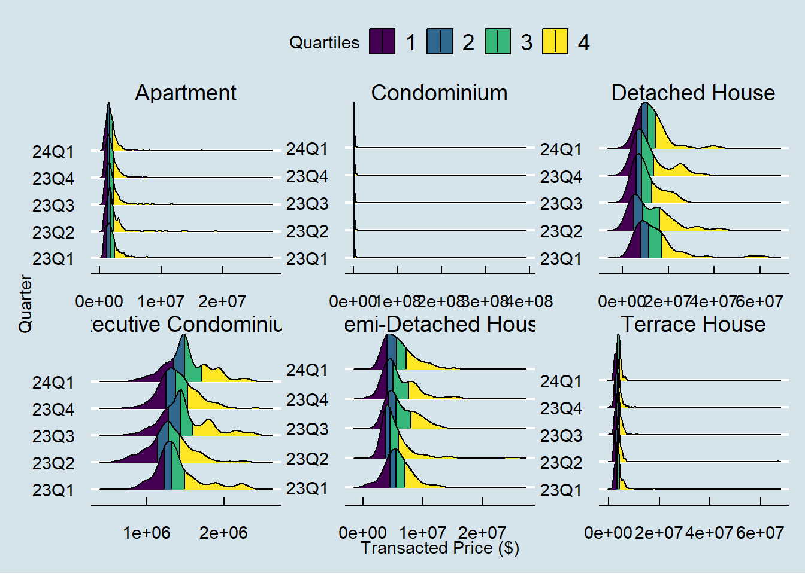

# load tidyverse from pacman
pacman::p_load(tidyverse,dplyr,ggridges,ggthemes,colorspace,ggiraph,plotly)Take-home Ex 01
Building Elegant and yet Informative Data Visualisation
1.0 Overview
1.1 Setting the scene
There are two major residential property market in Singapore, namely public and private housing. Public housing aims to meet the basic need of the general public with monthly $14,000 for families/couples buying a new HDB flat. Singapore is a city-state with limited land resource. Housing, on the other hand, is one of the basic need of people of this city-state. In order to ensure that all citizen in the country can access to affordable housing, the government have initiated massive public housing programme since independent.
1.2 The Task
Assuming the role of a graphical editor of a media company, you are requested to prepare minimum two and maximum three data visualisation to reveal the private residential market and sub-markets of Singapore for the 1st quarter of 2024.
2.0 Set Up
2.1 Loading the packages into R
T he pac::p_load() function to load the required R packages in the working environment. The following packages are used in this set up:
- ggthemes: Extra themes, geoms, and scales for ggplot2.
- tidyverse: A collection of core packages designed for data science, used extensively for data preparation and wrangling.
- ggridges: a ggplot2 extension specially designed for plotting ridgeline plots
- colorspace:
- ggiraph: for making ‘ggplot’ graphics interactive.
- plotly: R library for plotting interactive statistical graphs.
2.2 Importing the data sets
Five sets of data are provided for this exercise:
- 2023 Quarter 1 Residential Transaction: ResidentialTransaction20240308160536.csv
- 2023 Quarter 2 Residential Transaction: ResidentialTransaction20240308160736.csv
- 2023 Quarter 3 Residential Transaction: ResidentialTransaction20240308161009.csv
- 2023 Quarter 4 Residential Transaction: ResidentialTransaction20240308161109.csv
- 2024 Quarter 1 Residential Transaction: ResidentialTransaction20240414220633.csv
All five sets of data consists of past transactions between Q1 of 2023 to Q1 of 2024, with 21 variables that will be explored in detail after the data sets are imported.
# load transaction data using readr, part of tidyverse package
data.23Q1 <- read_csv("data/ResidentialTransaction20240308160536.csv")
data.23Q2 <- read_csv("data/ResidentialTransaction20240308160736.csv")
data.23Q3 <- read_csv("data/ResidentialTransaction20240308161009.csv")
data.23Q4 <- read_csv("data/ResidentialTransaction20240308161109.csv")
data.24Q1 <- read_csv("data/ResidentialTransaction20240414220633.csv")To add new column Quarter into each of the csv file.
data.23Q1$Quarter <- rep('23Q1',nrow(data.23Q1))
data.23Q2$Quarter <- rep('23Q2',nrow(data.23Q2))
data.23Q3$Quarter <- rep('23Q3',nrow(data.23Q3))
data.23Q4$Quarter <-rep('23Q4',nrow(data.23Q4))
data.24Q1$Quarter <- rep('24Q1',nrow(data.24Q1))Combining all the data set into one
df <- rbind(data.23Q1,data.23Q2,data.23Q3,data.23Q4,data.24Q1)To have a basic understanding of all 21 variables, glimpse() is used with 2024 Q1 data. We can see that there are 21 columns, with the following data types:
doubles:
Transacted Price ($)Area (SQFT)Unit Price ($ PSF)Area (SQM)Unit Price ($ PSM)Number of Units
characters: the rest of the 16 variables, including
Quarter
# have a basic understanding for all 22 variables
glimpse(df)Rows: 26,806
Columns: 22
$ `Project Name` <chr> "THE REEF AT KING'S DOCK", "URBAN TREASU…
$ `Transacted Price ($)` <dbl> 2317000, 1823500, 1421112, 1258112, 1280…
$ `Area (SQFT)` <dbl> 882.65, 882.65, 1076.40, 1033.34, 871.88…
$ `Unit Price ($ PSF)` <dbl> 2625, 2066, 1320, 1218, 1468, 1767, 1095…
$ `Sale Date` <chr> "01 Jan 2023", "02 Jan 2023", "02 Jan 20…
$ Address <chr> "12 HARBOURFRONT AVENUE #05-32", "205 JA…
$ `Type of Sale` <chr> "New Sale", "New Sale", "New Sale", "New…
$ `Type of Area` <chr> "Strata", "Strata", "Strata", "Strata", …
$ `Area (SQM)` <dbl> 82.0, 82.0, 100.0, 96.0, 81.0, 308.7, 42…
$ `Unit Price ($ PSM)` <dbl> 28256, 22238, 14211, 13105, 15802, 19015…
$ `Nett Price($)` <chr> "-", "-", "-", "-", "-", "-", "-", "-", …
$ `Property Type` <chr> "Condominium", "Condominium", "Executive…
$ `Number of Units` <dbl> 1, 1, 1, 1, 1, 1, 1, 1, 1, 1, 1, 1, 1, 1…
$ Tenure <chr> "99 yrs from 12/01/2021", "Freehold", "9…
$ `Completion Date` <chr> "Uncompleted", "Uncompleted", "Uncomplet…
$ `Purchaser Address Indicator` <chr> "HDB", "Private", "HDB", "HDB", "HDB", "…
$ `Postal Code` <chr> "097996", "419535", "269343", "269294", …
$ `Postal District` <chr> "04", "14", "27", "27", "28", "19", "10"…
$ `Postal Sector` <chr> "09", "41", "26", "26", "79", "54", "27"…
$ `Planning Region` <chr> "Central Region", "East Region", "North …
$ `Planning Area` <chr> "Bukit Merah", "Bedok", "Yishun", "Yishu…
$ Quarter <chr> "23Q1", "23Q1", "23Q1", "23Q1", "23Q1", …2.3 Understanding the data
ggplot(data = df,
aes(x=Quarter, fill = `Type of Sale`)) +
geom_bar() 
ggplot(data = df,
aes(y = `Transacted Price ($)`, x = Quarter)) +
geom_boxplot()
From the boxplot above, it seems like there are outliers in 23Q1 that are extremely far from the rest of the data points. We may choose to exclude these transactions to have a better data set. However, given that this are all the actual transactions that have happened in the past five quarters, it may not be a good idea to exclude these data.
Hence, we could explore other options such as comparing the selecting similar property types to make more meaningful conclusion.
ggplot(data = df ,
aes(x = `Transacted Price ($)`,
y = Quarter,
fill = 0.5)) +
geom_density_ridges_gradient(
scale = 3,
rel_min_height = 0.01) +
scale_fill_viridis_c(name = "Transacted Price",
option = "C") +
scale_x_continuous(
name = "Transacted Price",
expand = c(0,0)
) +
scale_y_discrete(
name = NULL,
expand = expansion(add = c(0.2,2.6))
) +
theme_ridges()
ggplot(data = df,
aes(x=`Type of Area`,
fill = `Type of Sale`)) +
geom_bar() 
Looking at the bar chart above, it might be a good way to filter the data based on Type of Area to do further analysis. To lend some background context to this segregation, you can refer to this link: Landed vs. Strata Landed From this link, we can also derive further segregation by Property Type.
land_df <- filter(df, `Type of Area` == 'Land')
strata_df<- filter(df, `Type of Area` == 'Strata')ggplot(data = land_df,
aes(x= `Property Type`, y = `Transacted Price ($)`,
fill = `Property Type`)) +
geom_line_interactive()ggplot(data = land_df ,
aes(x = `Transacted Price ($)`,
y = Quarter,
fill = 0.5)) +
geom_density_ridges_gradient(
scale = 3,
rel_min_height = 0.01) +
scale_fill_viridis_c(name = "Transacted Price",
option = "C") +
scale_x_continuous(
name = "Transacted Price",
expand = c(0,0)
) +
scale_y_discrete(
name = NULL,
expand = expansion(add = c(0.2,2.6))
) +
theme_ridges()Although the
ggplot(data = strata_df,
aes(y = `Transacted Price ($)`, x = Quarter)) +
geom_boxplot()
ggplot(data = strata_df ,
aes(x = `Transacted Price ($)`,
y = Quarter,
fill = 0.5)) +
geom_density_ridges_gradient(
scale = 3,
rel_min_height = 0.01) +
scale_fill_viridis_c(name = "Transacted Price",
option = "C") +
scale_x_continuous(
name = "Transacted Price",
expand = c(0,0)
) +
scale_y_discrete(
name = NULL,
expand = expansion(add = c(0.2,2.6))
) +
theme_ridges()
Although after filtering
ggplot(data = df,
aes(x =`Planning Area`,
fill = `Type of Sale`)) +
geom_bar() +
theme(axis.text.x = element_text(angle = 90, vjust = 0.5, hjust=1))